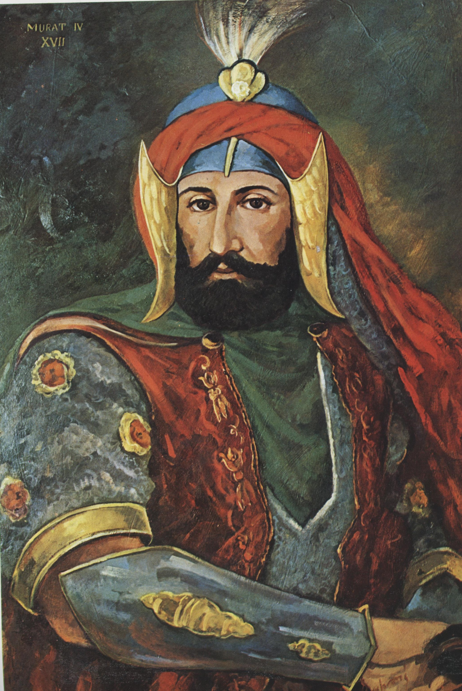

| önceki |  |
sonraki |
IV. Murad (Bağdat Fatihi), Osmanlı İmparatorluğu'nun on yedinci padişahı ve 82. İslam halifesidir. Babası I. Ahmed, annesi Kösem Mahpeyker Valide Sultan'dır. Osmanlı tarihinin en kudretli, en heybetli ve otoriter hükümdarlarından biridir. Çökmekte ve dağılmakta olan devlet nizamını demir bir iradeyle ayağa kaldırmış; Safevîleri dize getirip günümüz Türk-İran sınırını çizen Kasr-ı Şirin Antlaşması'nı miras bırakmıştır.
Çocuk Yaşta Cülusu ve Naibelik Devri (1623 – 1632)
27 Temmuz 1612 tarihinde İstanbul'da doğdu. Amcası I. Mustafa'nın tahttan indirilmesi üzerine 10 Eylül 1623'te henüz 11 yaşındayken tahta çıktı. Yaşının küçüklüğü sebebiyle ilk dokuz yıl boyunca devlet yönetimi annesi Kösem Valide Sultan'ın saltanat naibliği ve saray ağalarının kontrolünde kaldı. Bu dönemde yeniçeri ve sipahi zorbaları devleti haraca bağlamış, Anadolu Celâlî ve Abaza Mehmed Paşa isyanlarıyla çalkalanmış, Bağdat Safevîlerin eline geçmişti.
1632 İhtilali ve Mutlak İktidarın Ele Alınması
1632 yılında yeniçeriler ve sipahiler Babüssaade önüne gelip ayaklandı; padişahın gözü önünde çok sevdiği Sadrazam Hafız Ahmed Paşa'yı taş ve kılıç darbeleriyle vahşice şehit ettiler. Bu dehşet anı 20 yaşındaki genç padişah için dönüm noktası oldu:
- Demir Yumruk: IV. Murad, iktidarı bizzat tekeline aldı. Fitne başı olan Sadrazam Topal Recep Paşa'yı saraya çağırarak boynunu vurdurdu. Sipahi ve yeniçeri ocaklarının ileri gelenlerini teker teker tasfiye edip devlete mutlak itaat yemini ettirdi.
- Sert Yasaklar ve Teftişler: Yangınların ve isyan dedikodularının kaynağı olan kahvehaneleri kapattırdı. Tütün, afyon ve içki kullanımını kesin olarak yasakladı. Yatsıdan sonra fener yakmadan sokağa çıkmayı menetti. Geceleri tebdil-i kıyafetle İstanbul sokaklarını bizzat denetleyerek kurallara uymayanları yerinde cezalandırdı. Şehirde emsalsiz bir asayiş ve nizam kurdu.
- Koçi Bey Risalesi: Devlet teşkilatındaki bozulmanın sebeplerini araştırmak için devrin büyük mütefekkiri Koçi Bey ve Kâtip Çelebi'ye layihalar ve raporlar hazırlatarak ıslahat programını bu esaslara göre yürüttü.
Büyük Doğu Seferleri: Revan ve Bağdat'ın Fethi
Ordusunun başında Kanunî gibi sefere çıkan son büyük gazi hükümdarlardandır:
- Revan Seferi (1635): Ordusunun önünde yürüyerek Revan (Erivan) üzerine yürüdü. Zorlu muharebeler sonucu Revan Kalesi'ni fethetti ve Safevî garnizon komutanı Emirgûne Han'ı teslim aldı. Dönüşte Tebriz'i fethetti.
- Bağdat Seferi (1638) ve "Bağdat Fatihi": 1624'ten beri Safevî işgalinde olan İslam medeniyetinin gözbebeği Bağdat'ı kurtarmak için 197 gün süren tarihi bir sefere çıktı. 40 gün süren kanlı kuşatma sırasında Sadrazam Tayyar Mehmed Paşa şehit düşünce IV. Murad büyük bir teessürle "Bağdat'ı almaya çalışmak, Bağdat'ın kendisinden daha mı hayırlıydı ne!" demiştir. 25 Aralık 1638'de kale fethedildi ve IV. Murad tarihe "Bağdat Fatihi" unvanıyla geçti.
- Kasr-ı Şirin Antlaşması (17 Mayıs 1639): Safevî Devleti ile imzalanan bu tarihi antlaşma ile Bağdat ve Basra Osmanlı'da kaldı; Zagros Dağları tabii sınır kabul edildi. Bu antlaşma, günümüz Türkiye-İran sınırının temelini teşkil etmiştir.
Efsanevi Gücü, İmarı ve Kültür
IV. Murad, inanılmaz fiziki kuvveti, okçuluk ve cirit ustalığıyla efsanelere konu olmuştur. 200 okkalık (yaklaşık 250 kg) gürzleri tek eliyle kaldırıp sallayabildiği, kalkanları okla delebildiği ve atları tek yumrukla devirdiği kaynaklarda sabittir. Topkapı Sarayı'nda Revan ve Bağdat zaferlerinin hatırasına çinili şaheserler olan Revan Köşkü ve Bağdat Köşkü'nü inşa ettirmiştir. Döneminde Hezarfen Ahmed Çelebi Galata Kulesi'nden Üsküdar'a kanat takarak uçmuş; Lagari Hasan Çelebi barut macunlu füzeyle ilk roketli insan uçuşunu gerçekleştirmiştir.
Padişah, divan edebiyatında "Murâdî" mahlasıyla usta şiirler kaleme almıştır.
Vefatı
IV. Murad, Bağdat seferi dönüşünde yakalandığı nikris (gut) ve siroz hastalığı sebebiyle 8 Şubat 1640 gecesi henüz 28 yaşındayken Topkapı Sarayı'nda vefat etti. Cenazesi babası I. Ahmed'in Sultanahmet Camii yanındaki türbesine defnedildi.
Ailesi
- Eşleri:
- Ayşe Sultân (Baş Haseki)
- Şemsişah Sultân
- Sanavber Hâtûn
- Erkek çocukları: (Tüm şehzadeleri çocuk yaşta salgın hastalıklardan vefat etmiştir)
- Şehzade Ahmed (1628 – 1639)
- Şehzade Numan (1628 – 1629)
- Şehzade Mehmed (1633 – 1637)
- Şehzade Hasan (1631 – 1632)
- Şehzade Selim (1634 – 1640)
- Şehzade Mahmud (1638 – 1638)
- Kız çocukları:
- Kaya İsmihan Sultân (Melek Ahmed Paşa'nın eşi, Evliya Çelebi'nin Seyahatnamesi'nde geniş yer bulur)
- Gevherhan Sultân (Kaptan-ı Derya Çavuşzade Mehmed Paşa ile evlendi)
- Hanzade Sultân (Nakkaş Mustafa Paşa ile evlendi)
- Safiye Sultân (Sarı Abaza Hüseyin Paşa ile evlendi)
- Rukiye Sultân (Şeyhülislam Şerif Efendi'nin oğlu Divrikli Mehmed Paşa ile evlendi)
IV. Murad hakkında daha fazla bilgi için buraya tıklayın.